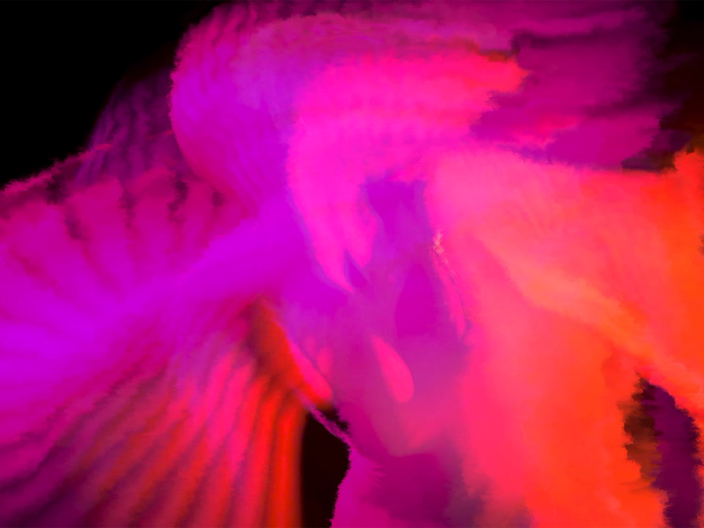
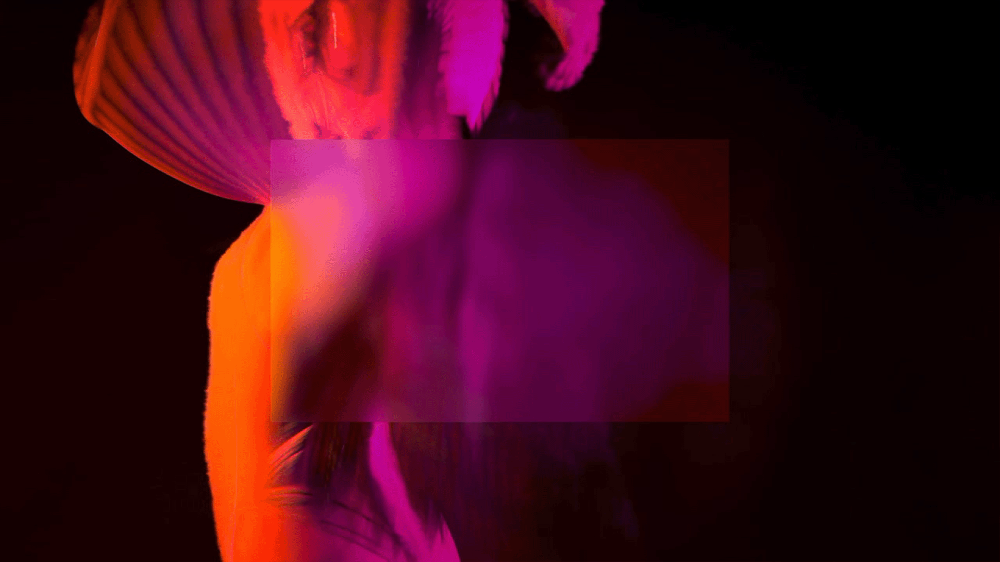
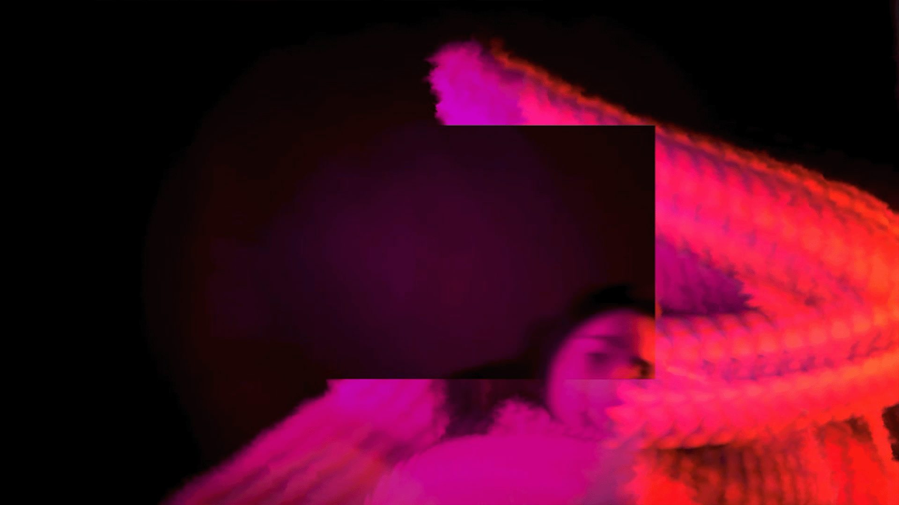
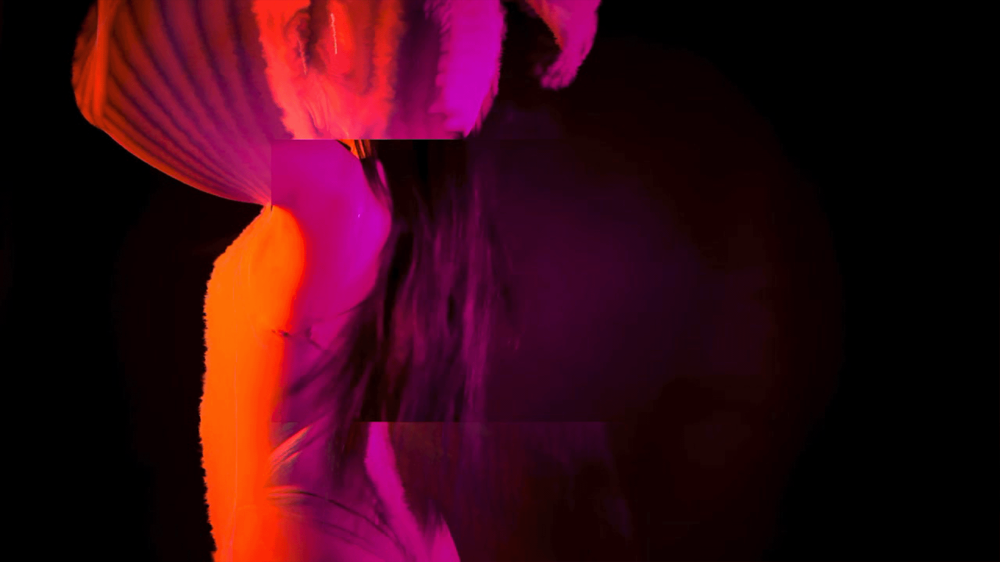
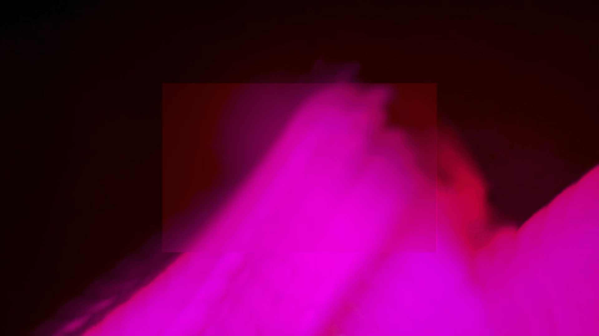
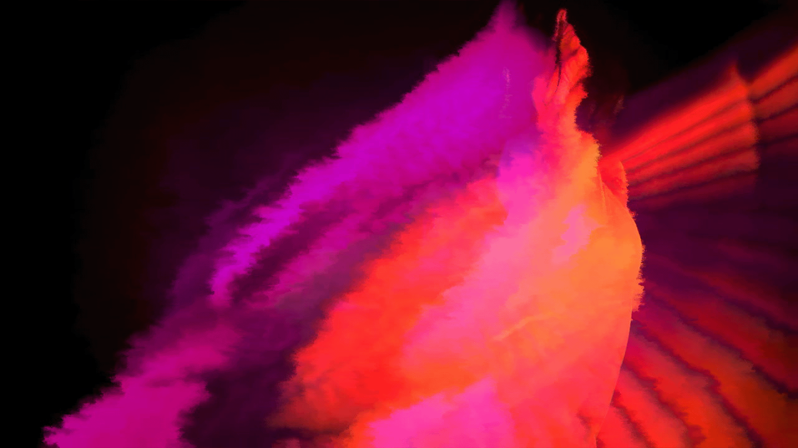

/ jan 2022
/ team
benedetta ricciardi,
ludovica villani
/ my role
project manager,
visual designer
/ performer
gaia sicoli
/ links
1 chaos
2 boundary
3 beyond

/ team
benedetta ricciardi,
ludovica villani
/ my role
project manager,
visual designer
/ performer
gaia sicoli
/ links
1 chaos
2 boundary
3 beyond
frammenti dal caos sets out an investigation of the process through which human beings experience, assimilate and mould reality. it consists of three phases, each represented by an audiovisual artefact, altered according to a different procedural process that formally narrates the conceptual content of the section.
section 1 (chaos)
the physical idea of reality being naturally subject to an ever-increasing entropy establishes the foundation to interpret all human creative action as an attempt to resist the dissolutive tendency of matter.
the physical idea of reality being naturally subject to an ever-increasing entropy establishes the foundation to interpret all human creative action as an attempt to resist the dissolutive tendency of matter.

section 2 (boundary)
the human nature is aimed towards the act of creation, to accomplish which it proves necessary to frame a precise section of a reality otherwise too vast, chaotic and complex.

the human nature is aimed towards the act of creation, to accomplish which it proves necessary to frame a precise section of a reality otherwise too vast, chaotic and complex.
section 3 (beyond)
the human tension towards control and the inevitable selection of reality fragments emerges as an admission by the human being of his own loss of control, of his impossibility of manipulating and analysing reality.




the human tension towards control and the inevitable selection of reality fragments emerges as an admission by the human being of his own loss of control, of his impossibility of manipulating and analysing reality.